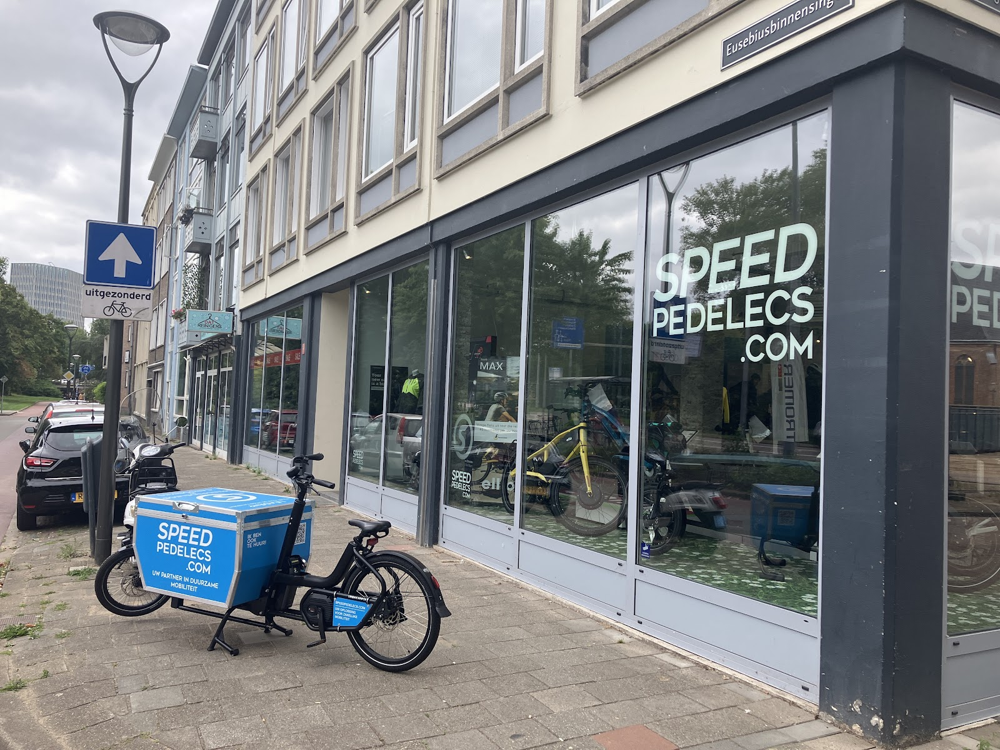
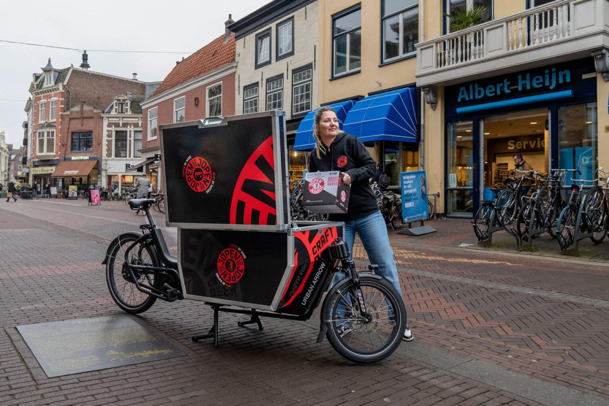
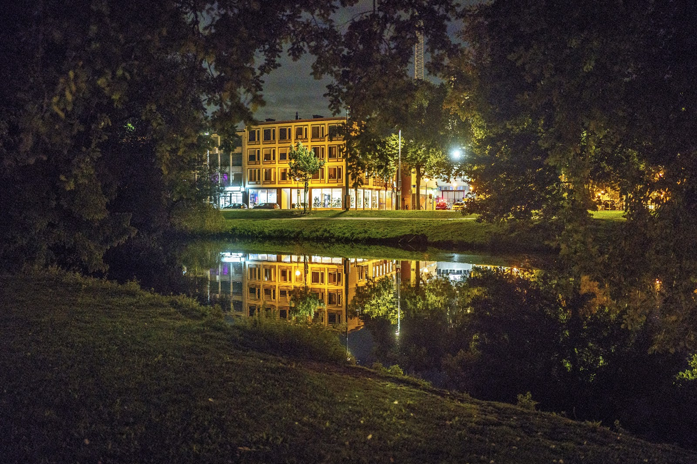

45 Kilometer per uur. Zonder file, zonder benzine.
Speedpedelecs.com is de speciaalzaak voor speed pedelecs in Arnhem. Kom een proefrit maken, laat je fiets nakijken in onze werkplaats of vraag advies over zakelijk rijden.

- Showroom en werkplaats
- Koningsplein 13, 6811 BW Arnhem
- Open
- Di t/m vr 9 tot 18 uur, za 10 tot 17 uur
- Op Google
- 4,8 uit 99 reviews
Waar je voor langskomt
Van de eerste testrit tot de volgende software-update: wij zorgen dat je speed pedelec klaar is voor de volgende rit.
-
Proefrit en advies
Niets overtuigt beter dan zelf rijden. Voel hoe krachtig, comfortabel en stil een speed pedelec is en vind het model dat bij jou past. Vaker terugkomen om te testen mag gewoon.
"Ze nemen de tijd en denken goed mee!" Charlotte Madsen
-
Werkplaats
Onderhoud, reparaties en software-updates. Ook als je fiets ergens anders gekocht is, of als een andere fietsenmaker er niet uitkwam.
"Top geholpen wat andere fietsenmaker had verpruts." Joep Hofman
-
Onderdelen
Van twee boutjes tot een complete achterwielmotor voor een Stromer van het eerste uur. Even binnenlopen kan, en we versturen ook.
"Het wiel netjes verzonden en 2 dagen later thuis." Bart Brunnekreef
-
Zakelijk rijden
Advies op maat voor werknemers én werkgevers, van fiscale voordelen tot onderhoudsformules. Lees verder
Meer dan een e‑bike. Groener dan elk motorvoertuig.
- Tot 45 km/u
- Sneller dan de file en ideaal voor langere afstanden. Je komt ontspannen en op tijd aan.
- Duurzaam en stil
- Geen uitstoot, geen lawaai. Goed voor het milieu en voor jou.
- Woon-werkverkeer
- Comfortabel, efficiënt en gemaakt voor dagelijks gebruik.
- Gezond en actief
- Elke rit houdt je in beweging, zonder dat je bezweet aankomt.
Merken in de showroom
- Stromer Elektrische kracht en Zwitserse precisie, in balans met duurzaamheid. Ook voor oudere Stromers kun je bij ons terecht.
- Ellio De Ellio Original Suspension kwam als beste uit de AD fietstest. Kom hem zelf proberen.
- Klever Van sportief tot comfortabel: vergelijk de modellen naast elkaar in de winkel.
- Urban Arrow Elektrische bakfietsen voor gezin en bedrijf.
Nieuw in ons assortiment
TMD Locks, een keyless kettingslot
Ontworpen en ontwikkeld in Nederland, door een bedrijf met meer dan twintig jaar ervaring in het beveiligen van financiële infrastructuur. Nu ingezet tegen fietsdiefstal.
- KeylessOpenen en sluiten zonder sleutel.
- Ingebouwd alarmDirecte waarschuwing bij verdachte beweging of een poging tot diefstal.
- Altijd verbondenExtra controle, waar de fiets zich ook bevindt.
- Ontwikkeld in NederlandHardware, software en firmware uit één organisatie.

Slim zakelijk rijden begint hier
Met een speed pedelec bespaar je tijd, kosten en CO₂-uitstoot. Perfect voor woon-werkverkeer, zonder files en parkeerstress.
We geven advies op maat voor werknemers én werkgevers, van fiscale voordelen tot onderhoudsformules.
Vraag zakelijk advies aanWat rijders zeggen
4,8 uit 99 Google-reviews
★★★★★
"Fijn geholpen bij de keuze voor een speedbike. Veel kunnen testen en vaker terugkomen om dat te doen is geen probleem. Ze nemen de tijd en denken goed mee!"
★★★★★
"Via marktplaats een achterwiel motor gevonden voor mijn "antieke" stromer st1 uit 2014. Het wiel netjes verzonden en 2 dagen later thuis. Zelf gemonteerd en ik heb weer een werkende stromer. Super blij. Bedankt jongens"
★★★★★
"Top geholpen wat andere fietsenmaker had verpruts. Dank voor jullie service en vakmanschap."
★★★★★
"Vandaag zonder afspraak binnengelopen bij SpeedPedelac in Arnhem. Ik had twee kleine boutjes nodig voor mijn elektrische fiets. Goede service, terwijl ik daar geen vaste klant ben. Zonder kosten gemonteerd!"
★★★★★
"Snel en vakkundig onderhoud Dolblij met mijn SP die nu veel beter fietst. Vriendelijke mensen"

Kom langs aan het Koningsplein
Voor een proefrit of een werkplaatsbeurt: bel of mail even vooraf, dan staat de juiste fiets en monteur voor je klaar.
Speedpedelecs.comKoningsplein 13
6811 BW Arnhem
Route plannen
Openingstijden
| Maandag | Gesloten |
| Dinsdag | 09:00 tot 18:00 |
| Woensdag | 09:00 tot 18:00 |
| Donderdag | 09:00 tot 18:00 |
| Vrijdag | 09:00 tot 18:00 |
| Zaterdag | 10:00 tot 17:00 |
| Zondag | Gesloten |